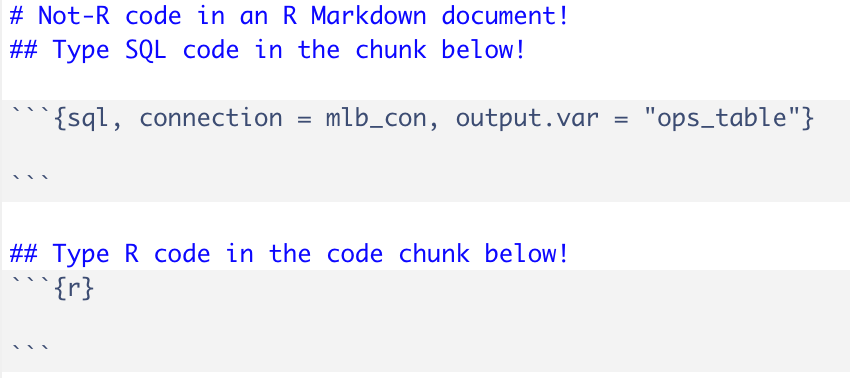

Data Wrangling in SQL
Let’s return to the opening for a second: Mookie Betts is very good at baseball. I want to show how good Mookie Betts is, by comparing him to several other players on some metric. We’ll use on-base plus slugging percentage (OPS); it is not the best statistic out there, but it will do for now.
We’ll compare Mookie Betts to the following players: Ken Griffey Jr, Vladimir Guerrero, Larry Walker, and Mike Trout. Griffey, Guerrero, and Walker are all recent inductees into the Hall-of-Fame, and are three of the best players of my generation. Mike Trout is an active player, and he is possibly the best player of my generation. In my opinion, he could retire today (he is only 29 as of this writing) and be inducted into the HoF in his first eligible year.
The data are not exactly in the form that we need yet; there isn’t an OPS column, full name is separated into two columns, and different variables that we need appear in one or both of the Batting and Master tables from the {Lahman} package. In short, we’ll need to perform the following wrangling steps before we can compare OPS over time for each player:
Join
batting_tableandmaster_tabletogether. Thebatting_tablecontains counting stats that we’ll need to calculate OPS for each player per season, andmaster_tablecontains biographical information for each player, such as name and birth year. The common key on which we’ll join the tables isplayerID, each player’s ID code.Filter the joined table on the five players we plan to compare. We can filter on one of several variables that uniquely identify each player, but we will use
playerID.Create new column consisting of:
- The first and last names combined in a single column, separated by a space – this new column will be called
name. This will be helpful for plotting purposes later on. - The age of each player, in each year.
- The first and last names combined in a single column, separated by a space – this new column will be called
Group by
nameandyearIDand calculate the on-base percentage (OBP), slugging percentage (SLG), and the OPS as a sum of the former two summary metrics.Order the resulting table by
name(i.e., alphabetical) andyearID(in ascending order).
We can accomplish this with a SQL query in RStudio by creating a SQL code chunk, rather than an R code chunk, in R Markdown:

Thus, we can enter a SQL query into the first code chunk, save the resulting table as ops_table, and then we can analyze the table in R! Enter the following query into a SQL code chunk:
SELECT nameFirst || " " || nameLast AS name,
yearID,
(yearID - master_table.birthYear) AS age,
1.0*(H + BB + HBP) / (AB + BB + SF + HBP) AS OBP,
1.0*(H + X2B + 2*X3B + 3*HR) / AB AS SLG,
1.0*(H + BB + HBP) / (AB + BB + SF + HBP) + 1.0*(H + X2B + 2*X3B + 3*HR) / AB AS OPS
FROM batting_table LEFT JOIN master_table ON batting_table.playerID = master_table.playerID
WHERE batting_table.playerID IN ("bettsmo01", "troutmi01", "walkela01", "griffke02", "guerrvl01")
GROUP BY name, yearID
ORDER BY name, yearID
I want to reiterate that I ran this query in R. I think that’s so cool!
A few notes on this SQL query:
- SQL code is not exactly “well-ordered”, and each element is not necessarily listed out in the order that they are executed (and that I listed out beforehand). I learned R before SQL, and while SQL queries are very similar to a
dplyrpipeline, this can be tricky sometimes. Generally the order of SQL elements follows a format like this:- SELECT
- FROM (followed by a JOIN, if applicable)
- WHERE
- GROUP BY
- HAVING
- UNION
- ORDER BY
- LIMIT
- We multiply the
OBP,SLG, andOPSdefinitions by1.0to convert them to floating point format. Because each of the elements involved in the calculations are integers, these definitions will each return values of0if not converted to floating point first. This can come up when dividing by integers. - An INNER JOIN would also work here, because five players we’re comparing appear in both
batting_tableandmaster_table. FYI: An equivalent query in R using adplyrpipeline (in an R code chunk!) would look like this:
ops_table <- Batting %>%
left_join(Master, by = "playerID") %>%
filter(playerID %in% c("bettsmo01", "troutmi01", "walkela01", "griffke02", "guerrvl01")) %>%
mutate(age = yearID - birthYear) %>%
unite("name", nameFirst:nameLast, sep = " ") %>%
group_by(name, age, yearID) %>%
summarize(OBP = sum(H + BB + HBP) / sum(AB + BB + SF + HBP),
SLG = sum(H + X2B + 2*X3B + 3*HR) / sum(AB),
OPS = OBP + SLG) %>%
ungroup() %>%
arrange(name, yearID)